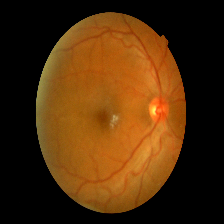
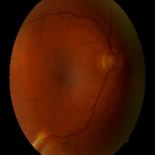
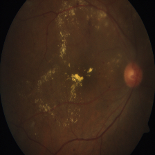
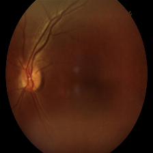

About Diabetic Retinopathy
Diabetic Retinopathy is an eye disease that occurs when diabetes damages the blood vessels in the retina. High blood sugar levels weaken these blood vessels, causing them to swell, leak, or close completely. In advanced stages abnormal blood vessels may grow in the retina leading to serious vision problems.
Early detection and treatment are essential to prevent permanent vision loss. Regular eye examinations and proper blood sugar control significantly reduce the risk of diabetic retinopathy.

Blood Sugar Levels and Risk
Maintaining healthy blood sugar levels is essential to prevent complications such as diabetic retinopathy. Long-term uncontrolled glucose levels damage retinal blood vessels and affect vision.
Normal Levels
- Fasting: 60 – 99 mg/dL
- After meal: Below 140 mg/dL
- Indicates healthy glucose regulation.
Prediabetes
- Fasting: 100 – 125 mg/dL
- After meal: 140 – 199 mg/dL
- Higher risk of developing diabetes.
Diabetes Level
- Fasting: 126 mg/dL+
- After meal: 200 mg/dL+
- Random sugar: 200 mg/dL+
Recommended for Diabetics
- Before meal: 80 – 130 mg/dL
- After meal: Below 180 mg/dL
- Helps prevent eye complications.
Symptoms
- Blurred vision
- Dark spots or floaters
- Difficulty seeing at night
- Sudden vision loss
- Difficulty focusing

Stages of Diabetic Retinopathy
Mild DR

Small areas of balloon-like swelling occur in the retina blood vessels.
Moderate DR

Blood vessels become blocked and damage increases.
Severe DR

More blood vessels become blocked leading to oxygen shortage in the retina.
Proliferative DR

New abnormal blood vessels grow and may cause severe vision loss.
Precautions After Diagnosis
- Monitor blood sugar regularly
- Follow prescribed medications
- Regular eye examinations
- Control blood pressure and cholesterol
- Avoid smoking and alcohol
Prevention Tips
- Maintain healthy blood sugar
- Exercise regularly
- Eat balanced diet
- Maintain healthy body weight
- Regular eye screening